使用说明
本软件最大的特点：无需任何网络实现手机有手机之间的数据交互，特别适合飞机或者驴友在没有任何信号和网络设备的情况下，一起互动传文件或者打游戏。只要您的蓝牙和Wi-Fi处于开启状态，建议您全都打开，但是并不需要接入任何网络和设置任何密码，如下图。本文着重讲解传输文件和面对面打游戏。
游戏
打开app之后，选择“游戏”tab页面，然后选择“创建房间”，接着会弹出一个选择游戏类型弹窗，选择您要与朋友一起参加的游戏类型。
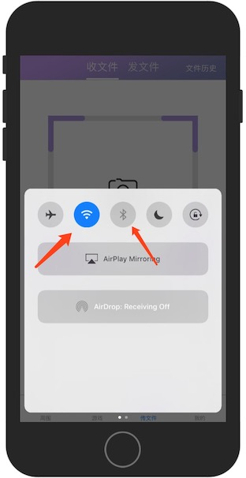 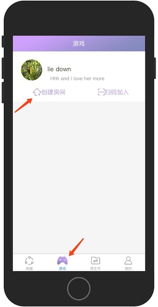选择游戏类型后，会进入游戏界面，在游戏界面的右上角会有一个二维码，点击二维码之后，二维码会显示在屏幕中央，再次点击二维码，二维码会缩回到屏幕的右上角。
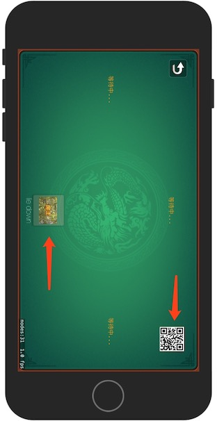 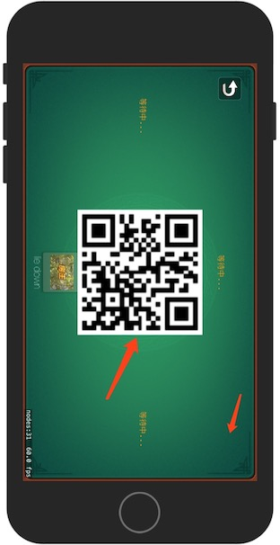您的朋友通过扫码二维码或者通过直接加入游戏的方式，就可以与您互动了。如下图:
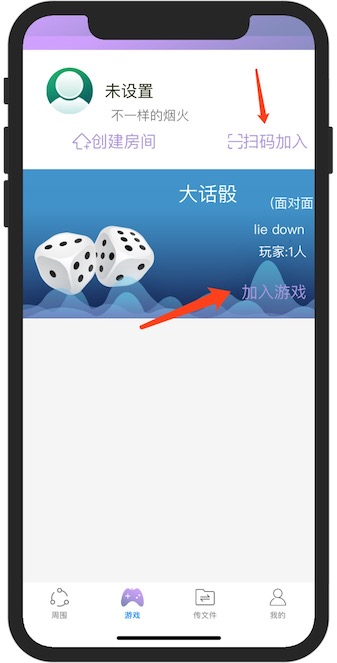 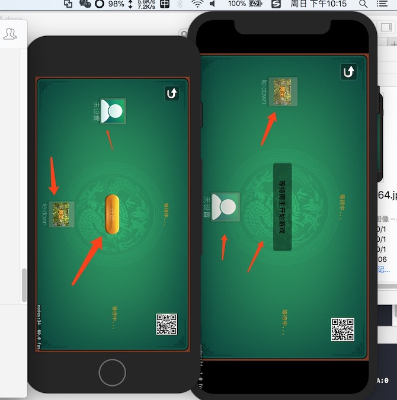接下来您就可以开始和朋友一起玩游戏了。我们的游戏种类还在丰富中，期待您的反馈。
传输文件
传输文件功能适合您与好友在无需接入网络的情况下传输文件，特别是无需服务器转存，实现文件的传输功能。首选选择你要传给好友的内容,选中文件后我们会为您生成一个二维码供朋友扫描使用,如下图:
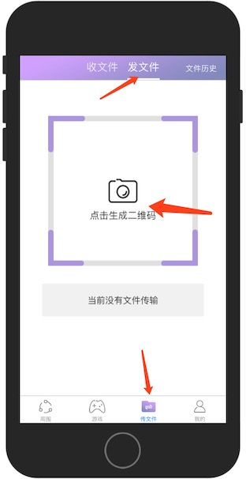 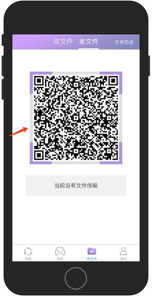您好友的手机通过扫描二维码的方式，实现从您的手机获取数据，包括图片，视频和音频。 对于视频和图片，我们将为您存储到您的图片文件夹下，对于音频，您可以在本app的菜单中找到并播放。如下图:
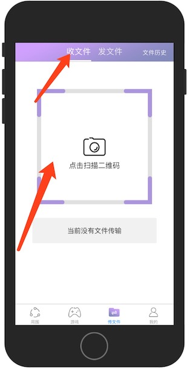 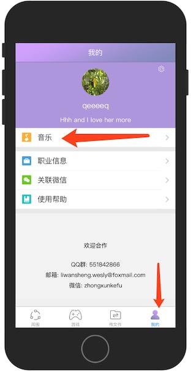 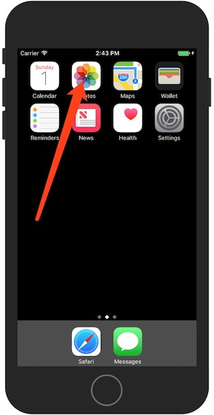本APP的功能还在开发过程中，如果您有什么好的建议，希望您能不吝赐教。
谢谢！